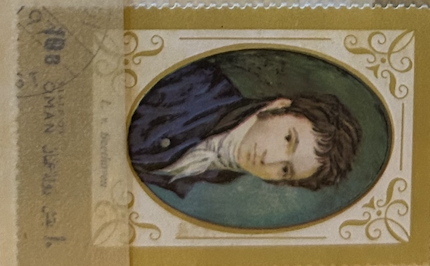
| SOURCE | TITLE| IMAGE MATCH | click to source page |
| Invaluable.com | Sold at Auction: Attributed to Jasper Miles (American, 1782-1849) | 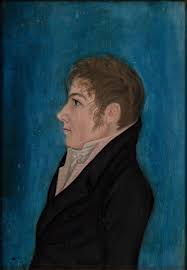 |
| lastdodo.com | Ludwig van Beethoven 4 (1972) - Oman [State of] - Illegal Stamps - LastDodo |  |
| Unique-Canvas.com | Self-portrait in a blue coat' by Philipp Otto Runge | Unique-Canvas.com | 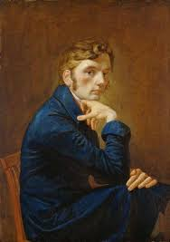 |
| emuseum.com | Fishing Boats at Gloucester – Works – eMuseum | 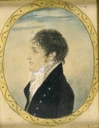 |
| AbeBooks | BEETHOVEN IN PERSON: HIS DEAFNESS, ILLNESS, AND DEATH by Davies, Peter J.: Very Good Hardcover (2001) 1st Edition | Daniel Liebert, Bookseller | 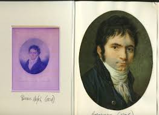 |
| Amazon.com | The Poetical Works of Henry Kirke White.: Henry Kirke White, Not Stated: Amazon.com: Books | 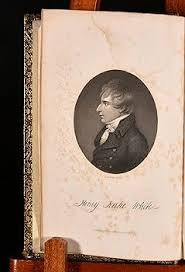 |
| 1st Art Gallery | A young man wearing a blue coat by (after) Marie-Gabrielle Capet Reproduction For Sale | 1st Art Gallery | 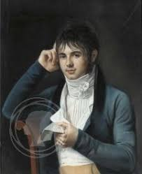 |
| Victoria and Albert Museum | John Constable, RA, at the age of twenty | Gardner, Daniel | V&A Explore The Collections | 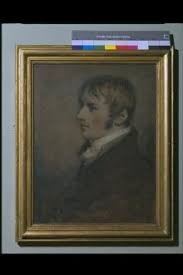 |
| eBay | Johann Christian Schoeller-Attrib."Gentleman in Neapolitan (?) landscape", 1820s | eBay | 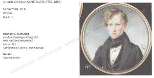 |
| YouTube | Beethoven - Pierre Barbizet & Christian Ferras - Violin Sonata No.4 in A minor, Op.23 - YouTube | 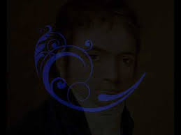 |
| Amazon.com | Amazon.com: A Thomas Love Peacock Collection (Audible Audio Edition): Thomas Love Peacock, Graham Scott, Alan Weyman, Denis Daly, Rachel May, Terah Tucker, Spoken Realms: Audible Books & Originals | 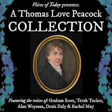 |
| Walmart | 24x36 gallery poster, Beethoven in 1803, painted by Christian Horneman - Walmart.com | 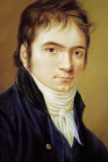 |
| Vassar College | Portrait of George Collins | Results | Frances Lehman Loeb Art Center | Vassar College | 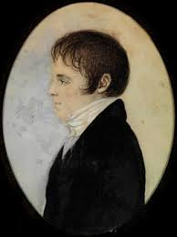 |
| National Gallery of Art (.gov) | John Porteous - Associated Artworks | National Gallery of Art | 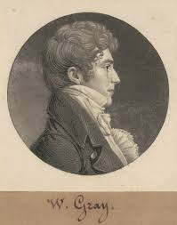 |
| Wikimedia.org | File:Jeremias Faber van Riemsdijk in 1802.png - Wikimedia Commons | 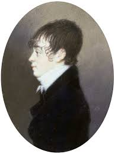 |
| biblio.com | Life of Robert Burns by COSWAY-STYLE BINDING; BAYNTUN RIVIÈRE, binders; BURNS, Robert; LOCKHART, J.G | Edinburgh and London: Constable and Co.,and Hurst, Chace and Co., 1828 | Biblio | 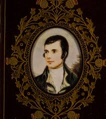 |
| Find a Grave | William Henry Allen (1784-1813) - Find a Grave Memorial | 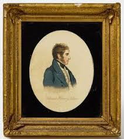 |
| Granger Art on Demand | Charles Lamb (1775-1834) #5 by Granger | 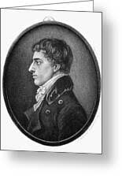 |
| Fine Art America | Portrait Of Count A. Kisseleff, 1816 Oil On Canvas Canvas Print by Karl Wilhelm Bardou - Fine Art America | 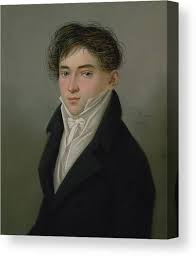 |
| Antic Hay Rare Books | THE LIFE AND CORRESPONDENCE OF ROBERT SOUTHEY | Charles Cuthbert SOUTHEY | 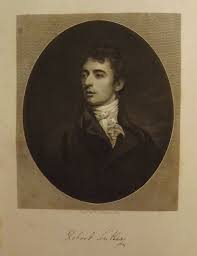 |
| Wikimedia.org | Category:Theodor Grotthuss - Wikimedia Commons | 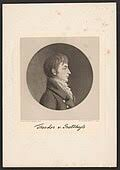 |
| MeisterDrucke - Art Prints, Paintings & Reproductions | David Wilkie, Esq. R.A., 1834 by Henry Robinson | 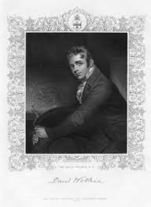 |
| New Brunswick Museum | A Major Gift of Late Georgian and Early Victorian New Brunswick Portraiture - New Brunswick Museum | 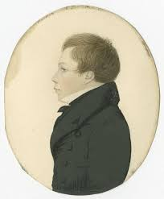 |
| Tumblr | Benjamin Bathurst vs Napoleon I Benjamin Bathurst Napoleon I Benjamin Bathurst (admin note: even if you don't vote for him, his... – @napoleonic-sexyman-tournament on Tumblr | 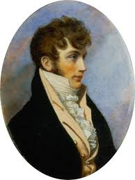 |
| Media Storehouse | 1888 Printers Sample for Worlds Inventors Souvenir Album. Art Prints, Posters & Puzzles from Heritage Images |  |
| Kanvah | Portrait of the Artist Prince G. G. Gagarin (1829) by Karl Bryullov - Canvas Artwork — Kanvah |  |
| Art Prints On Demand | Portrait of the marshal of the nobility - Karl Wilhelm Bardou as art print or hand painted oil. | 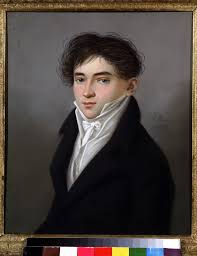 |
| University of California Press | The Work of Theodore Grotthus and the Innvention of the Davy Safety Lamp | 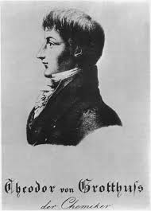 |
| Invaluable.com | Sold at Auction: John (1777) Turmeau, John Turmeau (1777-1846), Portrait | 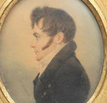 |
| eBay | TUCK Postcard "St Patrick Day" Picture of Three Men Dear to the Hearts Ireland * | eBay |  |
| Museum of Fine Arts, Budapest | Pygmalion – Museum of Fine Arts, Budapest | 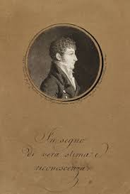 |
| The Universal magazine - Google Books | 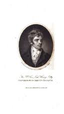 | |
| Science Source | Robert Southey, English Poet Laureate #1 Poster by Photo Researchers - Science Source Prints | 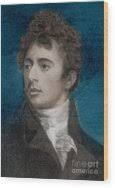 |
| Deezer | Ania Dorfmann: albums, songs, concerts | Deezer | 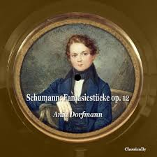 |
| Phil Mac Giolla Bháin | Laughing at Layalism and remembering Orr – Phil Mac Giolla Bháin | 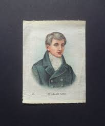 |
| eBay | Edward Satchwell Fraser Taft Museum Cincinnati Raeburn Postcard Jaffe Collotype | eBay | 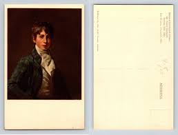 |
| Fine Art America | Philipp Otto Runge Painting by Johann Gottfried Eiffe - Fine Art America | 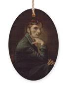 |
| Alchetron.com | Benjamin Bathurst (diplomat) - Alchetron, the free social encyclopedia | 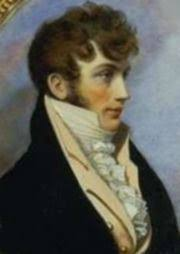 |
| famouspaintings.com | Memento Portrait Of A Young Midshipman Greeting Card by John Downman | 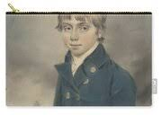 |
| Alamy | Portrait of Ernst Theodor Wilhelm Hoffmann. Museum: Staatsbibliothek Bamberg. Author: ANONYMOUS Stock Photo - Alamy | 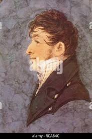 |
| Alamy | Lt. Charles Kenworthy Smart, John Smart, 1741–1811, British, undated, Watercolor and gouache on moderately think, slightly textured, cream laid paper, Sheet: 4 1/4 × 3 inches (10.8 × 7.6 cm), coat, collar, man, portrait, profile (figure), stock Stock Photo | 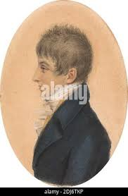 |
| Wikimedia.org | File:DomenicoRossettifrontespizio.jpg - Wikimedia Commons | 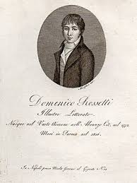 |
| MutualArt | Eduard Ender | 46 Artworks at Auction | MutualArt |  |
| Stretta Music | Louis Spohr Liededition Band 1-12 von Louis Spohr | im Stretta Noten Shop kaufen | 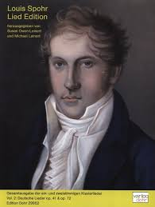 |
| Fine Art America | Portrait Of Count A. Kisseleff, 1816 Oil On Canvas Sticker by Karl Wilhelm Bardou - Fine Art America | 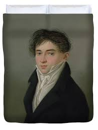 |
| pixels.com | Portrait Of Count A. Kisseleff, 1816 Oil On Canvas Bath Towel by Karl Wilhelm Bardou - Pixels | 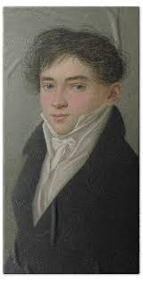 |
| Redbubble | Poster for Sale avec l'œuvre « Ludwig van Beethoven ~ Compositeur-Pianiste ~ 1803 Portrait par Christian Horneman » de l'artiste artsphere | Redbubble | 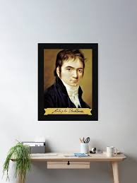 |
| Bridgeman Prints | Portrait Of Vincenzo Bellini Weekender Tote Bag by Francois Millet - Bridgeman Prints | 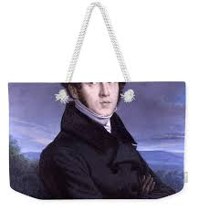 |
| Alamy | William donald hi-res stock photography and images - Alamy | 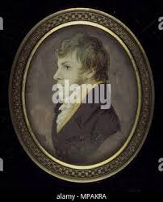 |
| Ubuy Ghana | Stephen Decatur N(1779-1820) American Naval Officer Ghana | Ubuy | 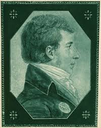 |
| Granger Art on Demand | Thomas Love Peacock (1785-1866) by Granger | 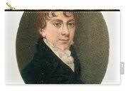 |
| PICRYL | James H. Cafferty - Portrait of Robert Fulton - PICRYL - Public Domain Media Search Engine Public Domain Search | 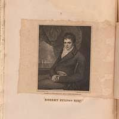 |
{kind=link}
{kind=link}